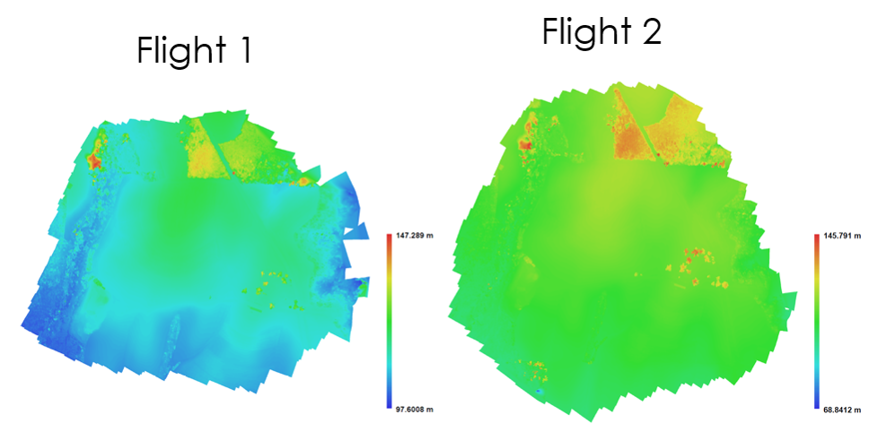

Analysis of processing outputs
GIS595/MEA792: UAV/lidar Data Analytics
NCSU
OSGeoREL
at
Center for Geospatial Analytics
Fall 2015
Objectives
#-
#
- Use the proper terminology and understand its meaning #
- Describe the historical evolution of the UAS #
- Describe the elements of UAS #
- Classify different UAS according to their make and characteristics #
- Describe the different classes of the UAS #
- Recognize the military and civilian contribution to the UAS development #
- Understand the current state of the UAS development #
- Describe the objectives beyond the use of the UAS #
Flights Oct. 6th 2015

Analyzing the processing report

Includes:
- Orthophoto and digital elevation model sketch;
- Camera parameters and survey scheme
- Tie points data export (matching points and panoramas)
- Image overlap statistics
- Camera positioning error estimates
- Ground control point error estimates
Orthophoto

Survey data

Flight plans

Flight plan – flight 1

Flight plan – flight 2

Ground Control Points

Ground Control Points

Camera calibration report

Camera calibration report

Camera calibration report

Camera calibration report

Camera calibration report

Camera calibration report

Camera calibration report

Analyzing the processing report

- While carrying out photo alignment PhotoScan estimates both internal and external camera orientation parameters, including nonlinear radial distortions.
Tools > Camera calibration
Image residuals

Image residuals

Image residuals

Image residuals

Image residuals
This reprojection error is equivalent to the root mean square (RMS) image residuals used in photogrammetric literature
More on image residuals in this article

Flight path

Flight path in 3D

Digital Surface Model
Digital Surface Model

Digital Surface Model

DSMs comparison

DSMs comparison by software

DSMs comparison -GCPs

'Bowl effect'
effect can be introduced during photo alignment, in case camera calibration estimates are inaccurate

'Bowl effect'- solutions to the problem
- If camera calibration is known in advance- it can be loaded in PhotoScan and fixed during photo alignment.
- Optimization procedure - recommended approach
- based on camera or GCP coordinates
- performed after photo alignment
- is recommended to perform optimization based on ground control data in any case, even if precalibrated cameras are used
Optimization

What is an optimization?
- PhotoScan performs full photogrammetric adjustment taking into account additional constraints introduced by ground control data
- Extrinsic and intrinsic parameters for all cameras are optimized at this step, in contrast to the simple 7-parameter transform used for georeferencing by default
- Optimization helps to significantly improve accuracy of the final solution
More on the bowl effect in this article